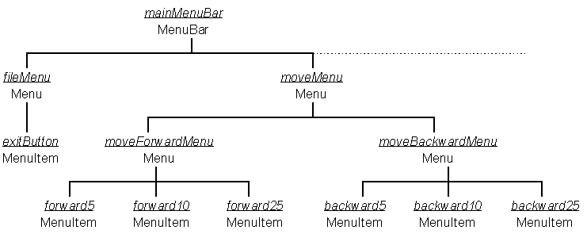
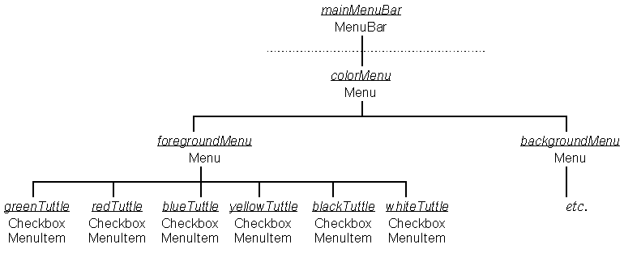

The MenuBarTuttleInterface class supplies the entire menu system shown in Figure 6.2. To accomplish this it constructs an instance hierarchy, part of which is shown in Figure 6.5, and installs it into the Frame instance which is passed as an argument to its constructor.

Figure 6.5 Partial MenuBarTuttleInterface
instance hierarchy,
showing the File and Move menu structure.
The first part of the constructor, illustrating the construction of the fileMenu and moveMenu/ moveForwardMenu, is as follows.
0036 protected MenuBarTuttleInterface( Frame itsFrame,
0035 ActionListener itsListener) {
0037
0039 MenuBar mainMenuBar;
0040
0041 Menu fileMenu;
0042 MenuItem exitButton;
0043
0044 Menu moveMenu;
0045
0046 Menu moveForwardMenu;
0047 MenuItem forward5;
0048 MenuItem forward10;
0049 MenuItem forward25;
---- Other Menu and MenuItem declarations omitted.
0080
0081 mainMenuBar = new MenuBar();
0082
0083 fileMenu = new Menu( "File");
0084 exitButton = new MenuItem( "Exit ...");
0085 exitButton.setActionCommand( "exit show");
0086 exitButton.addActionListener( itsListener);
0087 fileMenu.add( exitButton);
0088
0089 mainMenuBar.add( fileMenu);
0090
0091 moveMenu = new Menu( "Move");
0092
0093 moveForwardMenu = new Menu( "Forward");
0094
0095 forward5 = new MenuItem( "5 Steps");
0096 forward5.setActionCommand( "fd 5");
0097 forward5.addActionListener( itsListener);
0098 moveForwardMenu.add( forward5);
0099
0100 forward10 = new MenuItem( "10 Steps");
0101 forward10.setActionCommand( "fd 10");
0102 forward10.addActionListener( itsListener);
0103 moveForwardMenu.add( forward10);
0104
0105 forward25 = new MenuItem( "25 Steps");
0106 forward25.setActionCommand( "fd 25");
0107 forward25.addActionListener( itsListener);
0108 moveForwardMenu.add( forward25);
0109 moveMenu.add( moveForwardMenu);
---- // Construction of the moveBackwardMenu omitted.
0125
0127 moveMenu.add( moveBackwardMenu);
0128 mainMenuBar.add( moveMenu);
---- // Construction of the other menus omitted.
0285 mainMenuBar.add( helpMenu);
0286 mainMenuBar.setHelpMenu( helpMenu);
0287
0288 itsFrame.setMenuBar( mainMenuBar);
0289 } // End MenuBarTuttleInterface constructor.
This process is not particularly difficult, but it is complex and provides opportunity for confusing mistakes to creep in. To assist with understanding and maintaining the code it is suggested that indentation, which is conventionally used to indicate levels of program control structure, is used to indicate levels of the menu hierarchy. Thus the moveMenu steps are indented one level from the mainMenuBar steps. Likewise the cascading moveForwardMenu and moveBackwardMenu steps are indented to the right of the moveMenu, and the population of these two cascading menus is one further level of indentation to the right.
The two arguments to the constructor are the Frame instance within which the menu is to be installed and the identity of the ActionListener object to which all the active menu items are to dispatch ActionEvents when they are activated by the user. On lines 0039 to 0079 the MenuBar and all the Menus and MenuItems shown, or implied, in Figure 6.5 are declared. All the CheckBoxMenuItems, which will populate the Color menus and the lower part of the Screen menu are declared, outside the scope of the constructor, as instance attributes of the class, for reasons which will be explained below.
The constructor's first step, on line 0081, is to construct the mainMenuBar as an instance of the MenuBar class. The fileMenu pane is then constructed on line 0083 and populated with a single item on lines 0084 to 0087. Line 0084 constructs the exitButton which, as it will control the posting of a dialog, has the conventional three dots ( … ) at the end of its label. Lines 0085 and 0086 then establish its actionCommand and actionListener resources before the exitButton MenuItem is added to fileMenu Menu on line 0087. As the fileMenu is now completely constructed it is added to the mainMenuBar MenuBar instance on line 0089.
The construction of the moveMenu, on lines 0091 to 0127, continues this method. The moveMenu Menu instance is populated by two items both of which are themselves Menu instances and so will behave as cascading menus. The first of these, moveForwardMenu, is constructed on line 0093 and, as it will subsequently be added to another Menu instance, Java is able to recognize it as a cascading menu. Because of this the developer need not explicitly specify that its label should be followed by an arrow as Java will automatically supply one.
Before the moveForwardMenu is added to the moveMenu, on line 0109, it is populated with its three buttons. The construction, configuration and installation of the three MenuItems: forward5, forward10 and forward25, is accomplished on lines 0095 to 0108 using techniques which are essentially identical to those used for the exitButton as described above.
The construction of the moveBackwardMenu is essentially identical to that of the moveForwardMenu and has been omitted from the listing. When, on line 0127, it has been added to the moveMenu the moveMenu is complete and it is added to the mainMenuBar on line 0128.
The constructor continues with the construction of the remaining three menus, whose significant differences will be described below, concluding with the addition of the helpMenu on line 0285. This menu is then nominated as the helpMenu on line 0286. This will ensure that this menu is always the rightmost item on the menu bar and in some environments, for example X/ Motif, will be positioned at the extreme right of the menu bar. The final step of the MenuBarTuttleInterface constructor, on line 0288, is to install the MenuBar into the Frame passed as an argument to the constructor, using the Fame's setMenuBar() method.
This pattern of construction can be used whenever a top level menu system needs to be constructed. The contents of each menu and, if required, of each cascading menu can be designed on paper using a technique similar to that in Figure 6.2. Having done this the init() method from this example can be amended to implement the new requirements.
The construction of the Color menu differs a little from the construction of the Move menu as it is contains CheckBoxMenuItems, as shown in the instance hierarchy in Figure 6.6.

Figure 6.6 Partial mainMenuBar instance hierarchy. Color menu structure.
This hierarchy is built in the constructor, as follows.
0168 colorMenu = new Menu( "Colors"); 0169 0170 foregroundMenu = new Menu( "Foreground"); 0171 greenTuttle = new CheckboxMenuItem ( "Green"); 0172 greenTuttle.setActionCommand( "fg green"); 0173 greenTuttle.addActionListener( itsListener); 0174 foregroundMenu.add( greenTuttle); --- // Construction of other foreground CheckboxMenuItems omitted. 0175 0236 colorMenu.add( foregroundMenu); 0203 0204 backgroundMenu = new Menu( "Background"); 0205 greenBack = new CheckboxMenuItem ( "Green"); 0206 greenTuttle.setActionCommand( "bg green"); 0207 greenTuttle.addActionListener( itsListener); 0208 backgroundMenu.add( greenBack); 0209 --- // Construction of other background CheckboxMenuItems omitted. 0235 0237 colorMenu.add( backgroundMenu); 0238 mainMenuBar.add( colorMenu);
The only significant difference in the construction of this menu structure is that the items added to the cascading menus are instances of the CheckboxMenuItem class, not the MenuItem class. This will allow each menu item to be accompanied on the menu by a state indicator, as shown in Figure 6.2. The CheckboxMenuItem constructor used in their construction does not explicitly specify the state of the indicator and so the default, unchecked, state is used for all of them. However these buttons have to the configured as radio buttons, ensuring that one, and only one, of the items is selected at any time. This is accomplished by another method of the MenuBarTuttleInterface class, setForegroundCheckmark(), implemented as follows.
0293 protected void setForegroundCheckmark( String toSet) {
0294 greenTuttle.setState( false);
0295 redTuttle.setState( false);
0296 blueTuttle.setState( false);
0297 yellowTuttle.setState( false);
0298 whiteTuttle.setState( false);
0299 blackTuttle.setState( false);
0300
0301 if ( toSet.equals( "green")) {
0302 greenTuttle.setState( true);
0303 } else if ( toSet.equals( "red")) {
0304 redTuttle.setState( true);
0305 } else if ( toSet.equals( "blue")) {
0306 blueTuttle.setState( true);
0307 } else if ( toSet.equals( "yellow")) {
0308 yellowTuttle.setState( true);
0309 } else if ( toSet.equals( "white")) {
0310 whiteTuttle.setState( true);
0311 } else if ( toSet.equals( "black")) {
0312 blackTuttle.setState( true);
0313 } // End if.
0314 } // End setForegroundCheckmark.
The method commences, on lines 0294 to 0299, by ensuring that all check markers are set off. The six way if structure on lines 0301 to 0313 then sets the state indicator of the item indicated by the toSet argument. It is the responsibility of the MenuBarTuttle class to ensure that this method is called to indicate the initial Tuttle foreground color before the menus are presented to the user for the first time. Similar setForegroundCheckmark() and setPenUpCheckmark() methods are supplied to ensure that the background color buttons and the pen buttons on the Screen menu, also behave as radio buttons.
The only remaining significant difference is the inclusion of separators on the Screen menu, which are constructed and added by the following code fragment.
---- 0250 screenMenu.add( resetScreen); 0251 0252 screenMenu.addSeparator(); 0253 0254 clsetScreen = new MenuItem( "Clear and Reset"); 0255 clsetScreen.setActionCommand( "cr"); 0256 clsetScreen.addActionListener( itsListener); 0257 screenMenu.add( clsetScreen); 0258 0259 screenMenu.addSeparator(); 0260 0261 penUpCheck = new CheckboxMenuItem( "Pen up"); 0262 screenMenu.add( penUpCheck); 0263 penDownCheck = new CheckboxMenuItem( "Pen down"); 0264 screenMenu.add( penDownCheck); ----